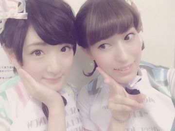

まずは！！
8月21日の乃木坂46真夏の全国ツアー2014！！
来てくださった皆さんありがとうございましたヽ(・∀・)ノ
初日から日にちが経って、
ななみん、れなさんがいない中でしたが
れなさんはみんなにメール下さって、ななみんは電話で参加して。
そして乃木坂46結成三周年を迎え。
最近バタバタしてたけど、3歳のお誕生日を迎えたんだ。
無事に迎えられて良かった。
皆さんがいてくれる力は本当に強いと感じました。
アイドルや芸能界にやっと慣れて来てそれを力に変える修行期間なのかなと思います。
直ぐに結果は出せない。
それはアイドルだけじゃなくて、学校でも会社でもそうだと思います。
でも目標に早く追いつく為に歩くのではなく、全力疾走で進んで行かなければなりません！！
皆さんこれからもよろしくお願いします！！！
ミステナイデネー(；ω；)笑
まいやんちゃんとまなつもお誕生日おめでとうございますヽ(・∀・)ノ
写真撮ってないよ〜(；ω；)
また今度！！
AKB48としては東京ドームコンサートに3日間参加しました！！
ユニットにも参加させて頂いて、乃木坂のガールズルールも歌わせて頂きましたヽ(・∀・)ノ
東京ドームの真ん中でパフォーマンスすることは凄く楽しかった。
いつか絶対乃木坂46で立つんだ！！

ひらりー⭐︎
あと。
今日はゆっくりアニメみたよ♡
主にFree!とLOVE STAGE!!と黒執事♡
黒執事はオープニング一期の時と同じシドさんで感動ヽ(・∀・)ノ
エンディングはAKIRA様♡
Free!は相変わらずまこちゃんににやにやして、愛ちゃんのタオルのペンギンみたいなアヒル？みたいなタオル可愛くて愛ちゃんかわいい。
LOVE STAGE!!は1人部屋で悶えてます
これくらいの感じが一番好き♡♡
二次元パワーも充電しました♡☆彡
明日は仙台。
東北！！
よろしくお願いします！
へばなっ！☆彡